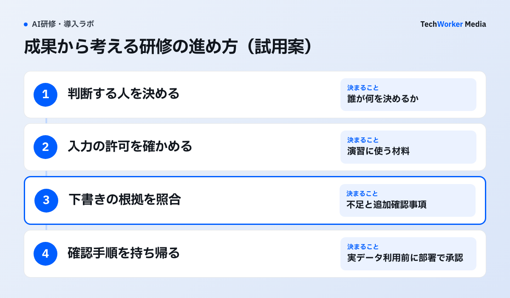

毎月の会議資料を作る担当者が、AIに文章の整形を頼む。そこから一歩進めるなら、会議で何を決めたいかまで依頼に書けます。ただし、資料を渡せる範囲と、答えを確かめる人も必要です。
2026年10月13日、Felix Rieseberg氏がチュートリアルを公開しました。同氏はAnthropicでClaudeの開発に携わっています。原文はAIへの依頼を広げる提案です。新機能の発表や、日本企業での効果を測った研究ではありません。この記事では、その提案を研修の題材選びに当てはめます。
原文は、作業の先にある成果を問い直している
Rieseberg氏は、成果から考える視点を「Altitude」と呼んでいます。資料を完成させたあと、何が起きてほしいかを考える視点です。
原文what do you want to happen next?
日本語訳次に何が起きてほしいですか。
原文の例は、架空の会社の四半期レビューです。スライド作成から、優先して決める事項や、問題を早く見つける仕組みへ依頼を広げています。架空の例なので、企業の導入実績には数えません。
同氏は、作業を深く検討する「Depth」と、他分野の方法を取り入れる「Range」も説明しています。とくに結果の確認では、AI自身の採点に任せきりにしないよう勧めています。これは著者の実践上の提案です。精度や費用の改善を保証するものではありません。
研修では、会議で決めたいことを一つ選ぶ
研修担当者は、受講者の仕事から「誰が何を判断するか」を一つ選びます。以下はTechWorkerが記事のために作った試用案です。自社や受講企業で検証した結果ではありません。
たとえば、支店を持つ会社の営業責任者が、次月の応援要員を決める場面を考えます。会議資料の体裁を整えるだけなら、見出しや書式が評価の中心になります。応援要員の判断まで扱う課題では、受注の見込み、対応できる件数、未確認の情報も確かめます。
初回の演習は、会社が利用を許可した架空データで行います。受注見込みと対応件数から、不足が疑われる支店と根拠を示す課題にします。この範囲なら、確認する数字を先に用意できます。人員の配置や顧客への約束を、AIに実行させる課題にはしません。
受講者が持ち帰るのは、判断を支える下書きと確認手順です。実データで試す前に、所属部署の責任者が入力範囲を承認します。原文の「多くの情報を渡す」という助言を、社内資料の無制限な接続へ読み替えないでください。
題材・材料・確認方法を、演習の前に決める
最初に決めるのは、出来上がった文書を誰が使うかです。その人が判断に使える状態を、演習の完了条件にします。

営業会議の例なら、課題シートには次の内容を書きます。目的は「次月の応援要員を検討する」。材料は「利用を許可した架空の支店別データ」。作るものは「不足が疑われる支店、根拠、追加確認事項の一覧」です。
確認方法は、文章の読みやすさと分けます。講師は元データと集計値を照合し、受講者は結論に使った行を説明します。根拠が足りない支店について、AIが推測で人数を埋めていないかも見ます。必要な情報がない場合は「判断できない」と残せることを合格条件に含めます。
部署によっては、出来上がった資料を判断に使えない場合もあります。原データの定義が違う、更新日がそろわない、入力許可がない、といった問題です。この状態では課題の範囲を広げず、定義と利用条件を確かめるところで止めます。
依頼を広げても、権限と予算は広げない
「会議で決める内容まで考える」と「実際に決裁する」は別の工程です。外部への送信、データの書き換え、購入は、演習の権限に含めません。
原文は、ソフトウェアを動かし、必要なデータへアクセスできる環境も前提にしています。一般的なチャット画面だけで、同じ手順がそのまま動くとは限りません。製品・契約・管理者の設定によって使える道具を確認します。
日本の法人で試す際も、入力資料の利用許可、個人情報、顧客との契約、会社のAI利用ルールを先に確認します。この記事は法的な適合性や、特定プランでの動作を判定するものではありません。APIや外部ツールを使う場合は、費用の上限と停止方法も決めます。
次の研修では、実業務と測る項目を対にする
研修担当者は、候補となる業務を一つ持ち寄り、判断する人と、結果を確かめる資料を書いてみてください。入力できる材料と確認方法が決まらなければ、その題材は持ち帰って再検討します。
研修後の確認には、業務で使ったか、成果物の質、かかった時間を残せます。使っていない場合は、権限がない、材料がない、仕事の頻度が低い、といった理由も分けます。未使用を、AIの処理が失敗した結果と混同しません。
TechWorkerの研修サイトでは、教材の毎週更新と、受講者の実業務1本を案内しています。受講から30日後の測定も、提供する研修の約束です。この記事の試用案で、削減効果が確認できたという意味ではありません。
出典はFelix Rieseberg氏の原文です。2026年10月13日公開、10月16日確認。原文の助言と、TechWorkerが作った演習の試用案を区別しています。自社でこの演習の業務効果は未検証です。